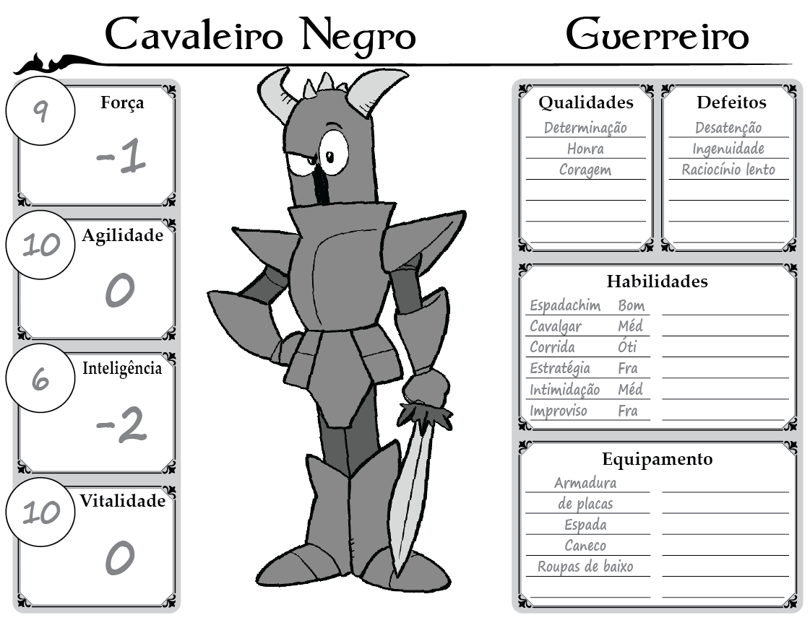
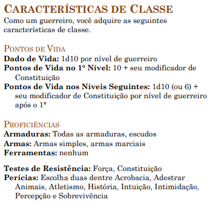

Guerreiro
Uma humana em sua armadura de placas empunha seu escudo antes de ir ao encontro de um bando de goblins. Um elfo atrás dela, em seu corselete de couro batido, salpica os goblins com flechas atiradas de seu primoroso arco. O meio-orc próximo, dá ordens visando coordenar os ataques dos dois combatentes para obter a melhor vantagem. Um anão em sua cota de malha coloca seu escudo entre à clava de um ogro e seu companheiro, direcionando o ataque mortal para o outro lado. Seu companheiro, um meio-elfo em sua brunea, brande suas duas cimitarras em um turbilhão de golpes, rodeando o ogro a procura de um ponto fraco em suas defesas. Um gladiador luta por esporte em uma arena, um mestre com seu tridente e rede, hábil em prender os inimigos e arrastá-los para delírio da plateia – e sua própria vantagem tática. A espada de seu oponente lampeja com um brilho azul um instante antes de um relâmpago atingi-lo pelas costas. Todos esses heróis são guerreiros, talvez a mais diversificada classe de personagens nos mundos de DUNGEONS & DRAGONS. Cavaleiros em missões, lordes conquistadores, campeões reais, infantaria de elite, mercenários rígidos e bandidos reis, como guerreiros, eles compartilham de uma maestria com armas e armaduras sem precedentes, bem como um vasto conhecimento e habilidades em combate. E eles estão bem familiarizados com a morte, seja simplesmente conhecendo-a ou desafiando-a cara a cara.Criando um Guerreiro
Conforme você constrói o seu guerreiro, é importante pensar em dois elementos relativos à história do seu personagem: onde você conseguiu seu treinamento em combate e o que o diferencia dos outros guerreiros ao seu redor? Você era de alguma forma cruel? Conseguiu uma ajuda extra de um mentor, talvez por sua excepcional dedicação? O que o trouxe para esse tipo de treinamento em primeiro lugar? Uma ameaça à sua terra natal, sede de vingança, uma necessidade de provar a si mesmo, podem ser todos esses motivos. Você pode ter aproveitado um treinamento formal no exército real ou em uma milícia local. Talvez você tenha treinado na academia de guerra, aprendendo estratégias, táticas e história militar. Ou ainda pode ter sido um autodidata – rude, mas bem testado. Você escolheu o caminho da espada como uma fuga da vida na fazenda ou para seguir uma orgulhosa tradição familiar? Onde obteve suas armas e armaduras? Elas podem ser de uso militar ou uma herança de família, talvez você economizou por muitos anos para comprá-las. Seus armamentos são agora suas posses mais importantes – as únicas coisas que estão entre você e o abraço da morte.
